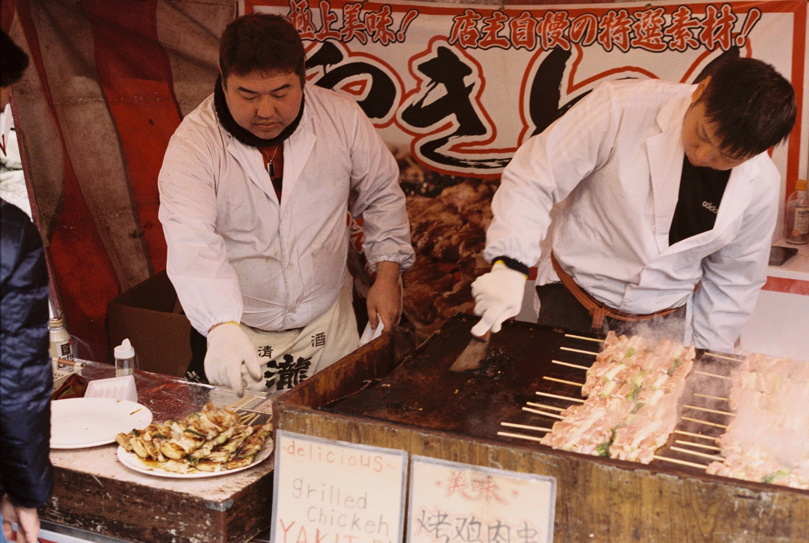
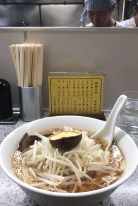
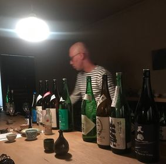
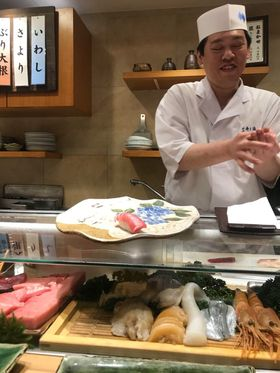
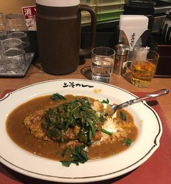

Food and Drink

Japan is world renowned for its food and drink, it has a diverse range of options. Whether you looking for an extravagant and colourful sweet treat or a delectable piece of Wagyu, you won't have to look far for beautiful food. Here are a few of my favourites.
Ramen

Ramen is a japenese noodle soup, it commonly consists of wheat noodles served in a meat or fish-based broth, this broth is often flavoured by mis or soy sauce. A range of toppings are used also such as boiled egg, sliced pork, seaweed, menma and scallions to name a few. Due to it being such a popular dish just about any spot in Japan will deliver a beautiful and tasty ramen.
Sake Tasting:

Sake is an alcoholic beverage made by the fermenting of rice, it is very popular in japan and originates from there. The tasting of it is an experience in itself, and is very immersive. There are many places you could go for this, I recommend looking for the least commercialised and smallest bar as this allows for the most authentic experience. You will be subject to tasting sake from the bartenders personal collection making for a culturally immersive drinking experience.
Sushi

Sushi is a staple of japanese cuisine, composed of white vinegared rice, often local raw seafood, vegetables and seaweed. The best sushi place that I visited was the Sushi Dai (すし大) it is one of the oldest restaraunts in the area, watch the chefs create your meal out of beautiful local seafood.
Katsudon Curry

Katsudon is a popular dish in japan that involves rice topped with a deep-fried pork cutlet, egg, vegetables and curry. It makes for a great meal that washed down with an Asahi will fill you up and keep you satisfied.